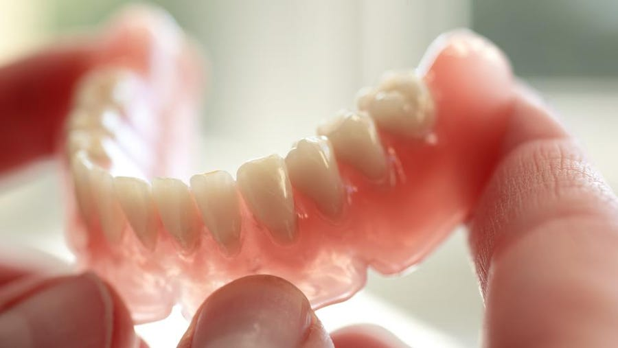
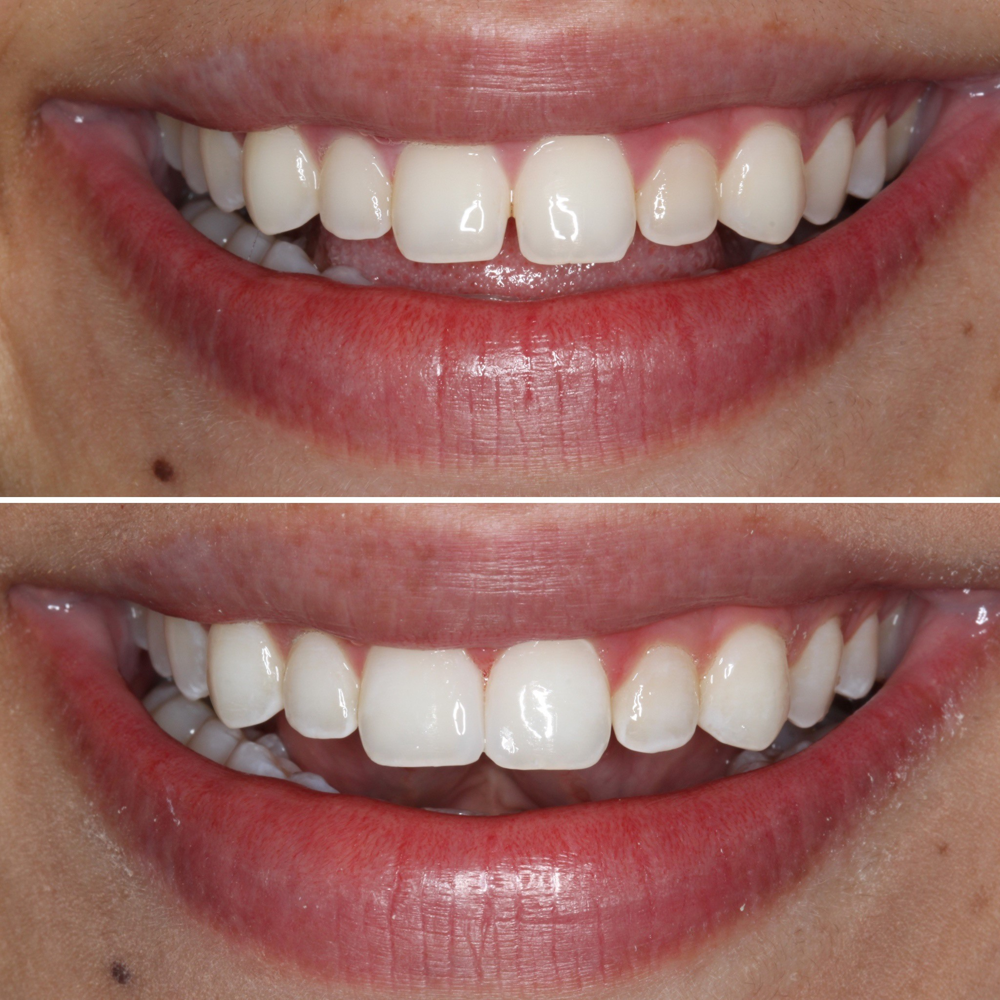

Professional teeth cleanings are scheduled twice a year, while X-rays are normally done once a year. Still, depending on what your dentist or dental hygienist observes in your mouth, they might do other exams during your visit. For children, a dentist may recommend molar sealants to help prevent cavities in hard-to-brush areas.
Teeth Whitening: Teeth whitening involves bleaching your teeth to make them lighter. It can't make your teeth brilliant white, but it can lighten the existing colour by several shades.
Tooth Extraction: Excessive tooth decay, tooth infection, and crowding can all require a tooth extraction. Those who get braces may need one or two teeth removed to provide room for their other teeth as they shift into place. Additionally, those who are undergoing chemotherapy or are about to have an organ transplant may need compromised teeth removed in order to keep their mouth healthy.

Dentures:
Dentures are removable false teeth made of acrylic (plastic), nylon or metal. They fit snugly over the gums to replace missing teeth and eliminate potential problems caused by gaps.
Gaps left by missing teeth can cause problems with eating and speech, and teeth either side of the gap may grow into the space at an angle.

Bonding:
Dental bonding is a cosmetic procedure that uses a tooth-colored composite resin material to enhance your smile. This procedure is used to repair chips, close down gaps or change the shape and color of a tooth. Unlike other cosmetic dental treatments,
such as porcelain veneers, dental bonding is completely reversible